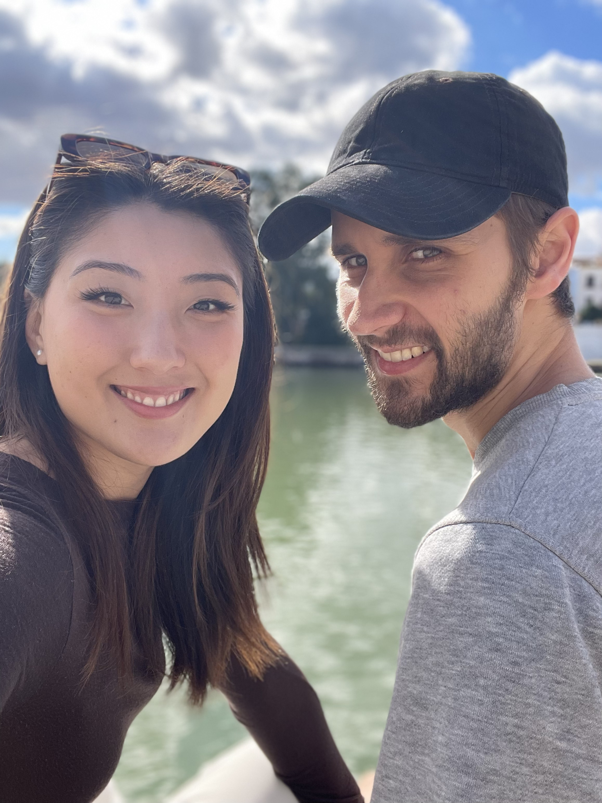
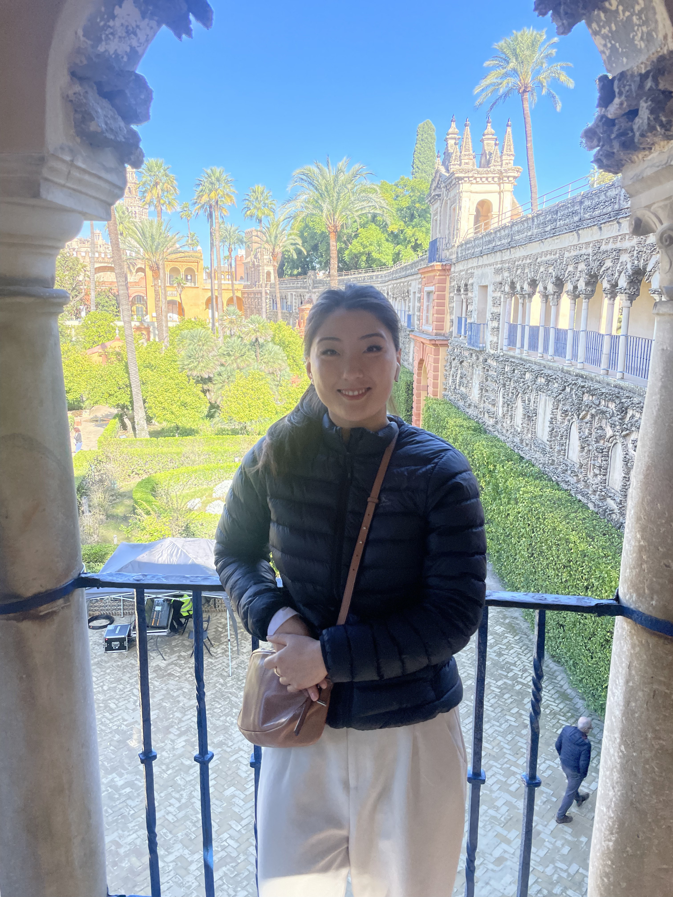

← Travel
Seville 2024
Our last leg on our Spain adventure was Seville!

27th October 2024
On this day we explored the sights of Seville, meandering through the streets to parks, fountains, markets and more. By far the most popular was the Plaza de Espana where tourists and locals gathered with horse drawn carriages paraded around the plaza. We quickly moved on to the main river running through Seville which had established itself as a trade powerhouse. Finally we caught a flamenco show in the evening in a small and intimate venue.

28th October 2024
After a quick bakery stop we were taken through the Royal Alacazar, a palace which is mostly unused but is grand and spectacular. It was actually the scene of some Game of Thrones storylines and often it is used to host large scale events for the public. We could see why! It mixed lush green spaces with intricately designed indoor spaces. We also ate at another traditional tapas place with iberico ham and paella.. A fun final day in Seville as the weather turned before the tragic flooding in parts of southern Spain.